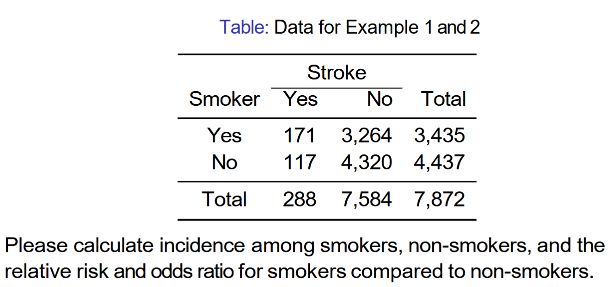

library(tidyverse)
library(epiR)
a <- 171
b <- 3264
c <- 117
d <- 4320
# total
t <- sum(a, b, c, d)epidemiology measures
Example from class:

We enter the data as separate vectors to facilitate calculations.
Calculate incidence among smokers and non-smokers using;
\[ I_{Exposed} = \frac{A}{A+B} \]
\[ I_{Un-exposed} = \frac{C}{C+D} \]
ir_exp <- a / (a+b) ; ir_exp[1] 0.04978166ir_unexp <- c / (c+d) ; ir_unexp[1] 0.02636917- About 5% of smokers had a stroke, almost twice as many as the non-smokers.
Calculate relative risk:
\[ RR = \frac{I_{Exposed}} {I_{Un-exposed}} \]
$$
$$
RR <- round(ir_exp / ir_unexp, 4) - Smokers are 1.88 times more at risk of having a stroke compared to non-smokers.
Calculate Odds Ratio
\[ \hat{OR} = \frac{AD}{BC} \]
OR <- (a*d) / (b*c)- Our odds ratio is close to our relative risk estimate.
Calculate Variances for OR and RR, to estimate 95% CI.
\[ Var(\ln \hat{R}) = \frac{b}{a(a+b)} + \frac{d}{c(c+d)} \]
\[ Var(\ln \hat{O}) = \frac{1}{a} + \frac{1}{b} + \frac{1}{c} + \frac{1}{d} \]
var_RR <- (b / (a*(a+b))) + (d / (c*(c+d))) ; var_RR[1] 0.01387846var_OR <- (1/a) + (1/b) + (1/c) + (1/d) ; var_OR[1] 0.01493282lower <- round(exp(log(RR) - 1.96 * sqrt(var_RR)) , 4)
upper <- round(exp(log(RR) + 1.96 * sqrt(var_RR)) , 4)
print(str_c("Printing 95% CI for relative risk . . . ", RR,
" [", lower, ", ", upper, "]"))[1] "Printing 95% CI for relative risk . . . 1.8879 [1.4986, 2.3783]"lower <- round(exp(log(OR) - 1.96 * sqrt(var_OR)), 4)
upper <- round(exp(log(OR) + 1.96 * sqrt(var_OR)), 4)
print(str_c("Printing 95% CI for odds ratio. . . ", RR,
" [", lower, ", ", upper, "]"))[1] "Printing 95% CI for odds ratio. . . 1.8879 [1.5224, 2.4579]"- The intervals do not contains 1, so they are statistically significant and reject the Null hypothesis that the odds are equal across smokers and non-smokers.
Prospective study:
a <- 23
b <- 125
c <- 13
d <- 150
t <- sum(a, b, c, d)
# check attrition
attrition <- sum(a/t, b/t, c/t, d/t) ; attrition[1] 1Calculate relative risk, and odds ratio from formula from before.
\[ \hat{R} = \frac{a(c+d)}{c(a+b)} \]
R_hat <- (a*(c+d)) / (c*(a+b)) ; R_hat[1] 1.948545OR <- (a*d)/(b*c) ; OR[1] 2.123077- The odds ratio is slightly larger than the relative risk.
Calculate the attributed risk in the exposed group.
\[ \hat{A}_{Exposed} \frac{\hat{R}-1}{\hat{R}} \]
A_exposed <- (R_hat - 1) / R_hat ; A_exposed[1] 0.4867965- The risk of the exposure on the outcome is almost 49% higher than the non exposed group.
Calculate the attributable risk in the population
\[ \hat{A}_{pop} = \frac{ad-bc}{(a+c)(c+d)} \]
# reduction in incidence in the population that would
# occur in the absence of the risk factor
A_hat_pop <- (a*d - b*c) / ((a+c)* (c+d)) ; A_hat_pop[1] 0.3110089- The reduction in the outcome of 31% in the population that would occur in the absence of the exposure, or risk factor.
Calculate the variance of the attributable risk in the population.
\[ V(\ln(1-\hat{A}_{pop}) = \frac{b + \hat{A}_{pop}(a+d)}{tc} \]
V <- (b + A_hat_pop* (a+d)) / (t*c) ; V[1] 0.04422571In a retrospective study we use the OR instead of or relative risk, and calculate the attributable risk in the exposed group and population.
R_hat <- (a*d)/(b*c) ; R_hat[1] 2.123077A_exposed <- (R_hat - 1) / R_hat ; A_exposed[1] 0.5289855For the population we change the denominator.
\[ \hat{A}_{pop} = \frac{ad-bc}{d(a+c)} \]
A_hat_pop <- (a*d - b*c) / ( d * (a+c)) ; A_hat_pop[1] 0.337963The variance is also computed differently
\[ V(\ln(1-\hat{A}_{pop}) = \frac{a}{c(a+c)}+\frac{b}{d(b+d)} \]
V <- (a / (c * (a + c))) +
(b / (d*(b+d))); V[1] 0.0521756We can now calculate 95% CI.
\[ LCL = 1-\exp{( \ln(1-\hat{A}_{pop}) + 1.96 \sqrt{V(\ln(1-\hat{A}_{pop})) } }) \]
\[ UCL = 1-\exp{( \ln(1-\hat{A}_{pop}) - 1.96 \sqrt{V(\ln(1-\hat{A}_{pop})) } }) \]
LCL <- 1 - exp( A_hat_pop + 1.96 * sqrt(V) ) ; LCL[1] -1.193867UCL <- 1 - exp( A_hat_pop - 1.96 * sqrt(V) ) ; UCL[1] 0.1039328
We can also use the r package epiR
# create table for later
bp <- matrix(c(a, b, c, d), ncol = 2, byrow = TRUE)
epi.2by2(bp) Outcome + Outcome - Total Inc risk *
Exposed + 23 125 148 15.54 (10.11 to 22.40)
Exposed - 13 150 163 7.98 (4.31 to 13.25)
Total 36 275 311 11.58 (8.24 to 15.66)
Point estimates and 95% CIs:
-------------------------------------------------------------------
Inc risk ratio 1.95 (1.02, 3.71)
Inc odds ratio 2.12 (1.03, 4.36)
Attrib risk in the exposed * 7.57 (0.40, 14.73)
Attrib fraction in the exposed (%) 48.68 (2.41, 73.01)
Attrib risk in the population * 3.60 (-1.87, 9.07)
Attrib fraction in the population (%) 31.10 (-4.04, 54.37)
-------------------------------------------------------------------
Uncorrected chi2 test that OR = 1: chi2(1) = 4.337 Pr>chi2 = 0.037
Fisher exact test that OR = 1: Pr>chi2 = 0.050
Wald confidence limits
CI: confidence interval
* Outcomes per 100 population units